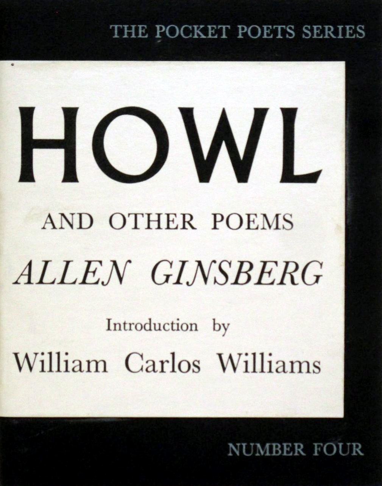
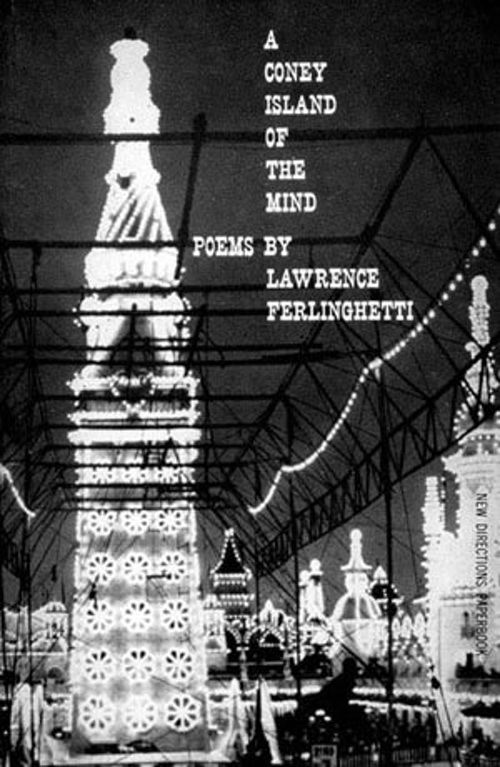
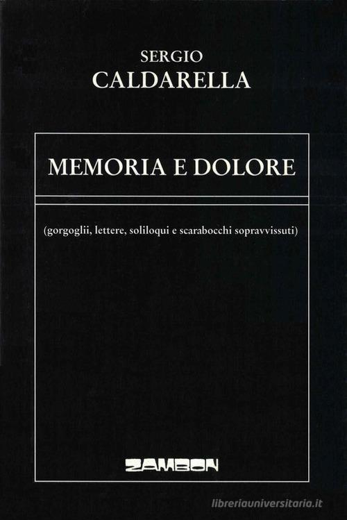

18:46 · 3 OPERE
Ciao Lawrence.
Il filo del discorso
Il saluto a Lawrence Ferlinghetti intreccia storia letteraria e ricordo personale. Dr Divago ripercorre l’attività di poeta, editore e fondatore di City Lights, soffermandosi sulla pubblicazione di Howl di Ginsberg e sulla difesa della libertà espressiva. Il ritratto accosta pacifismo, critica della città contemporanea e fiducia nella forza della parola poetica. Lettere, cartoline e ricordi di San Francisco riportano la riflessione al rapporto personale con Ferlinghetti. La lettura finale di un proprio testo trasforma il commiato in una meditazione sulla giovinezza e sul tempo.
I libri nel discorso

Howl (Urlo)
Note sul riferimento
Copertina della raccolta che contiene il poema: City Lights · Howl and Other Poems · Pocket Poets n. 4 · prima edizione 1956
Riproduzione della copertina della raccolta del 1956 che contiene Howl; l’immagine è già ritagliata e corretta cromaticamente dalla fonte dichiarata. Nessuna edizione specifica è attribuita al video.
Howl, la dedica a Carl Solomon e Allen Ginsberg sono nominati nel ricordo dell’attività editoriale di Ferlinghetti.

A Coney Island of the Mind
Note sul riferimento
Copertina: New Directions · edizione originale 1958 · copertina editoriale di riferimento
Immagine autentica dell’opera, controllata visivamente; non identifica l’edizione usata nel video.
È nominata A Coney Island of the Mind nella ricostruzione del percorso poetico di Ferlinghetti.

Memoria e dolore
Note sul riferimento
Copertina: Zambon Editore · 2004 · 80 pagine
Immagine autentica dell’opera, controllata visivamente; non identifica l’edizione usata nel video.
Il relatore annuncia un proprio testo dedicato a Ferlinghetti, tratto da Memoria e dolore; non sono accertati il titolo della singola composizione e la pagina.